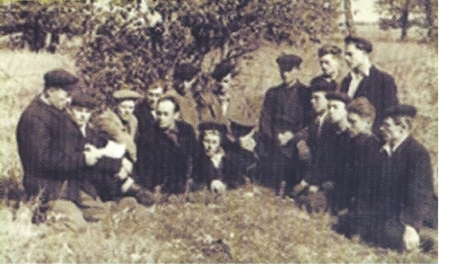
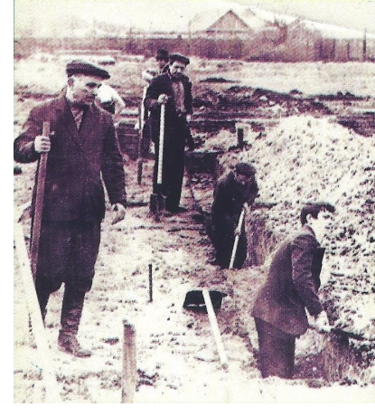
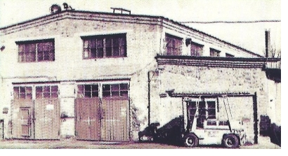
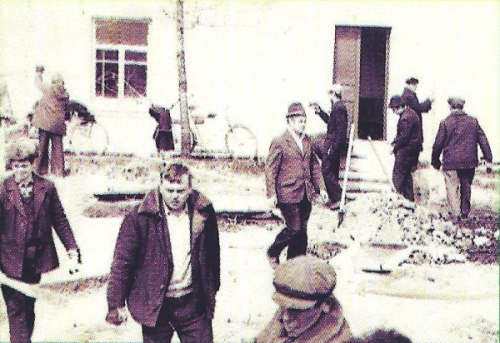

|  |
Первыми бригадирами Лоевского МТС были: Софья Змачинская (бригада №1),
Иван Петрович Бондарь (бр. № 2). Уже в 1933-34 годах шла подготовка трактористов. С 1935г.
открылись курсы трактористов и при нашей МТС. Первые тракторы, автомобили и комбайны крестьяне
встречали с восторгом. Народ сбегался посмотреть на них. Механизаторы, трактористы пользовались
большим уважением. Каждую весну перед началом работ проводились смотр техники и ее пробный выезд.
В 1936-37 гг. в нашей МТС имелось 2 бригады, состоящие из 14 человек. |
| Роль МТС в сельском хозяйстве
в предвоенный период была велика. С помощью этих транспортных предприятий оно развивалось более интенсивно.
Уже в 1940 г. МТС обрабатывали 93,7% посевных площадей колхозов. За выполненные работы колхозы
рассчитывались с государством сельхозпродукцией, т.е. натуроплатой. МТС ежегодно пополнялась техникой,
так как в стране строились новые тракторные заводы и расширялось сельскохозяйственное производство.
В предвоенные оды в Лоевском МТС работало 6 тракторных бригад, состоящих из 60 трактористов. Машинный
парк состоял из 20 тракторов ЧТЗ-С-60, НАТИ, ХТЗ, У-2, 9 комбайнов «Коммунар» и 2-х «Северных», 15
автомобилей, молотилок МК-1100, сеялок, плугов, борон, и другого сельхозинвентаря. Вторым директором
МТС был 25-тысяник Андриан |
 |
|  |
Савельевич Зайцев, который в марте 1941 г. был направление в Московскую
военную академию, с 1943 г. воевал начальником штаба танкового полка, после войны работал зам. директора
одного из заводов г. Риги. В МТС сложился замечательный коллектив механизаторов. Это: Иван Петрович
Бондарь, Иван Иванович Коваленко, Никанор Каленикович Лобан, Ануфрий Арсентьевич Синило, Аврам Васильевич
Лысенок, Владимир Евдокимович Пинчук, Антонина Фоминична Мельник, Евгения Аникеевна Колос, |
| Евдокия
Ивахненко (Паремская), Антон Семёнович Повжик, Степан Степанович Кравченко, Николай Кондратенко, Федор
Яколевич Мельниченко, Василий Потапович Ястреб, Кондрат Буглак, Николай Аникеенко, Максим Евстратенко.
С выездом на учёбу Зайцева А.С. обязанности директора до войны исполнял главный бухгалтер Слижевский.
Мирный труд Лоевского МТС, как и всей страны, был |
| прерван 22 июня 1941 г. В июле 1941 г. вся техника
МТС (трактора, комбайны, сельхозмашины, станки и оборудование) были переправлены в Клубовку, затем
погружены на станции Горностаевка в эшелон. В первом эшелоне было 25 трактористов во главе со старшим
механиком А.П.Мацкевичем. Поезд двигался через Гомель, Брянск. Но в районе Тондово Тульской области
попал под вражескую бомбёжку и был разрушен. Оставшиеся трактора были распределены по области, а
механизаторов оставили в совхозе «Степной хутор» (Байдак, Крупейченко, Коваленко, Повжик, Артеменко
и др. – всего 21 человек). Затемпосле уборки урожая механизаторы Лоевской МТС с |
 |
| совхозной колонной
эвакуировались в Пензенскую область. Часть трактористов была оставлена в МТС для ремонта военной
техники, а многие были призваны в действующую армию и сражались на фронтах Великой Отечественной войны.
Это – Владимир Евдокимович Пинчук, Степан Степанович Кравченко, Василий Потапович Ястреб, Антон
Семенович Повжик, который уехал на фронт на своем тракторе и возвратился на нем после Победы. Алексей
Платонович Мацкевич отказался от назначения главным механиком МТС в Пензенской области и добровольцем
ушел на фронт. |
Страница 1
Страница 2
Страница 3
Страница 4
Страница 5
|